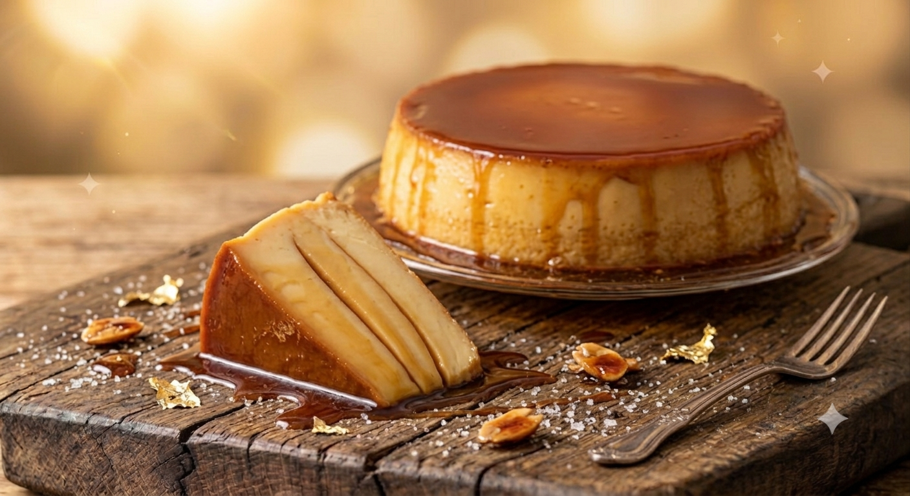

RECETA #006
Flan Napolitano con Queso

Ingredientes
Rinde 8 porciones.
- 6 huevos
- 1 lata de leche condensada
- 1 lata de leche evaporada
- 1 cucharada de extracto de vainilla
- 200 g de queso crema
- 3 cucharadas de maicena
- Papel aluminio
- 100 g de azúcar para el caramelo
Procedimiento
Para el caramelo: derrite el azúcar con muy poca agua hasta formar el caramelo.
Incorpora el caramelo a una flanera, antes de verter la mezcla, para evitar que se pegue.
Para el flan: licua todos los ingredientes juntos hasta obtener una mezcla homogénea.
Vierte la mezcla en la flanera ya caramelizada.
Tapa con papel aluminio para cocerlo y evitar su derrame.
Cuece a baño María en una olla durante 40 minutos.
Deja enfriar y desmolda.